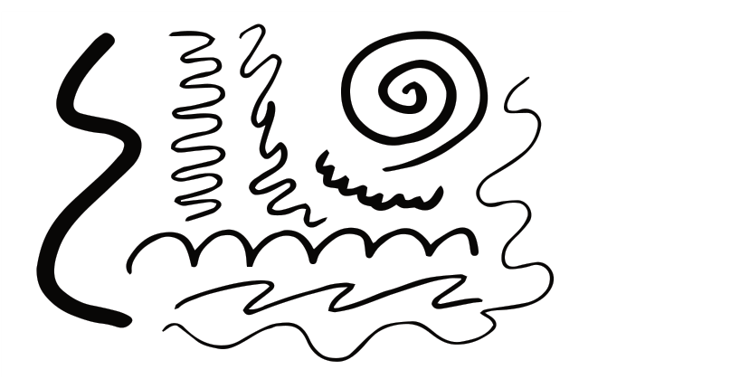

Lines can be either actual lines or implied lines as discussed below:
Actual lines: These are real linear marks made in a composition. They are lines appearing as a solid connection between one or more points in space. Actual lines vary in width, character and thickness qualities, depending on the medium used to draw the lines.
Implied lines: These are imaginary lines and are suggested by changes in colour, tone, texture or by the edge of shapes of objects and structures in the environment. A good example of an implied line is the horizon line which separates the sky and the ground.
Shape
This is an element of art expressed by two dimensions with only length and width. All shapes fall into only two categories which are geometrical and organic shapes.
Geometrical shapes: These are also known as regular shapes. Geometrical shapes have specific names such as circle, triangle, square, rectangular and oval. Figure 1.30 shows different geometrical shapes.